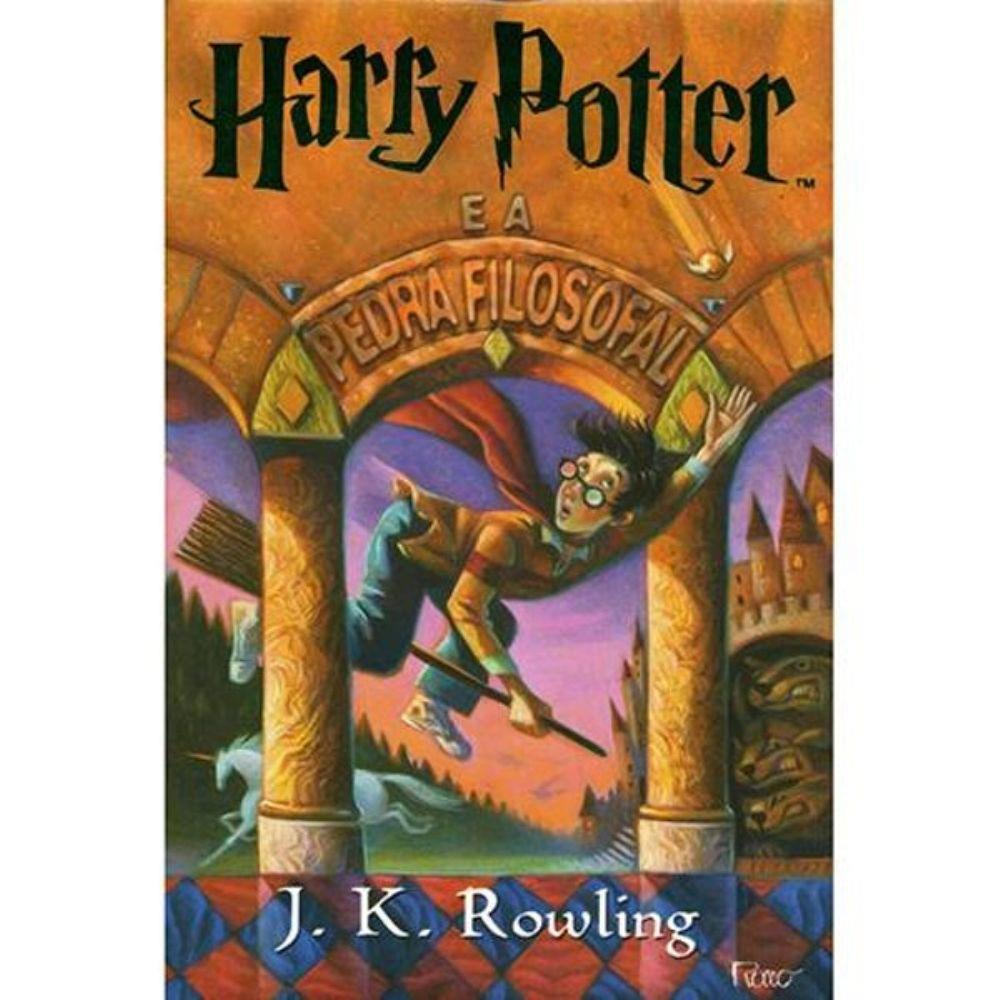
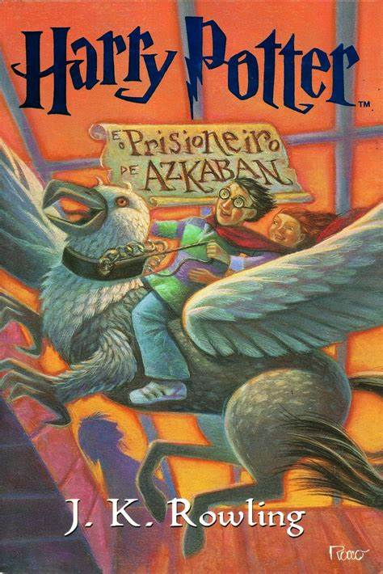
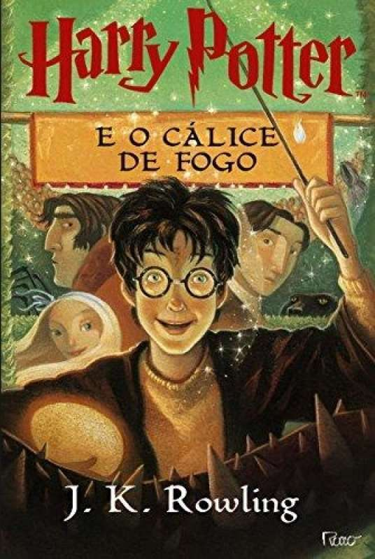
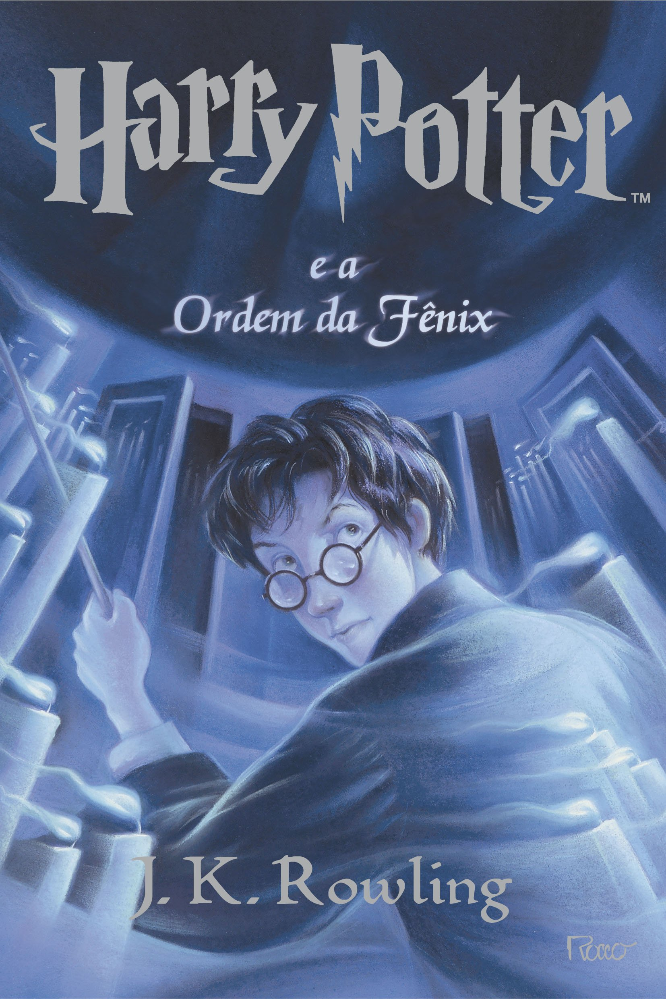
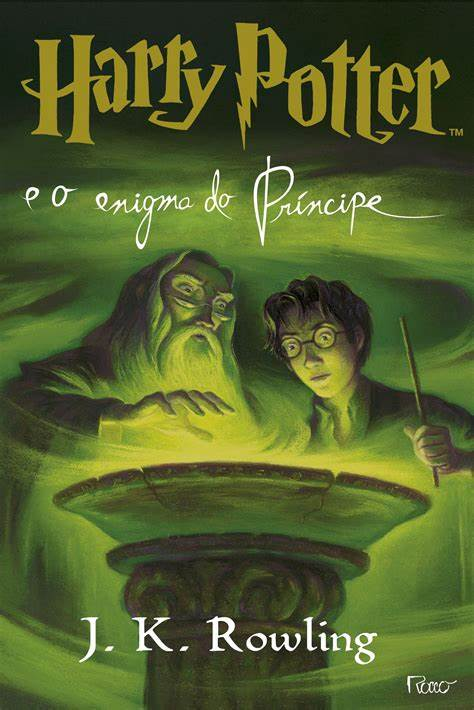
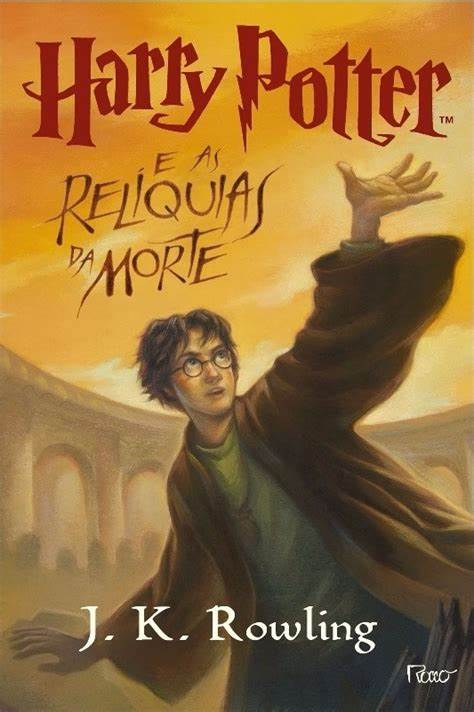

Harry Potter é uma série de sete romances de fantasia escrita pela autora britânica J. K. Rowling. A série narra as aventuras de um jovem chamado Harry James Potter, que descobre aos 11 anos de idade que é um bruxo ao ser convidado para estudar na Escola de Magia e Bruxaria de Hogwarts. O arco de história principal diz respeito às amizades de Harry com outros bruxos de sua idade, como Ron Weasley e Hermione Granger, e também com o diretor de Hogwarts Albus Dumbledore, considerado o maior dos magos, e seus conflitos com o bruxo das trevas Lord Voldemort, que pretende se tornar imortal, conquistar o mundo dos bruxos, subjugar as pessoas não-mágicas e destruir todos aqueles que estão em seu caminho, especialmente Harry Potter, a quem ele considera seu maior rival.
Os romances giram em torno de Harry James Potter, um órfão que descobre com 11 anos que é um bruxo, que vive no mundo comum de pessoas não-mágicas, conhecidas como "trouxas". O mundo bruxo é mantido em segredo, presumivelmente para evitar a perseguição de bruxas e bruxos. Tal habilidade é inata e essas crianças são convidadas a participar de uma escola de magia exclusiva, que ensina as habilidades necessárias para ter sucesso no mundo bruxo. Harry torna-se um estudante da Escola de Magia e Bruxaria de Hogwarts e é ali onde a maioria dos eventos da série acontecem. Enquanto Harry se desenvolve através da adolescência, ele aprende a superar os problemas que ele enfrenta: mágicos, sociais e emocionais, incluindo desafios adolescentes comuns, como amizades, paixões e provas, e o grande teste de preparar a si mesmo para o confronto no mundo real que temos pela frente.
- Harry Potter e a Pedra Filosofal

Capa do Livro 1 - Harry Potter e a Pedra Filosofal
Quando bebê, Harry Potter fora deixado na porta de seus tios maternos Petúnia Dursley (irmã mais velha de Lílian) e Válter Dursley. Harry cresceu na casa dos seus tios, que escondiam a verdade sobre sua família. Ao completar onze anos, o garoto começa a receber cartas de um remetente desconhecido, que aumentam de quantidade à medida que seus tios as destroem. Quando finalmente consegue abrir uma delas, Harry descobre que possui poderes mágicos, como os seus pais, e que foi aceito na Escola de Magia e Bruxaria de Hogwarts.
Em seguida, é revelado que os Potter não morreram num acidente de carro, como sempre dito a Harry, mas que foram assassinados por Lorde Voldemort, um dos maiores bruxos das trevas da história. Na noite do suposto acidente, Voldemort matou James e Lílian Potter, porém, ao tentar matar Harry, perdeu sua forma física e deixou uma cicatriz em forma de raio na testa do bebê.
- Harry Potter e a Câmara Secreta
 Capa do Livro 2 - Harry Potter e a Câmara Secreta
Capa do Livro 2 - Harry Potter e a Câmara Secreta
Após o primeiro ano de Harry em Hogwarts, ele retorna para à casa de seus tios para passar o verão. Um dia, um elfo doméstico chamado Dobby aparece em seu quarto alertando que se Harry voltar para Hogwarts, coisas terríveis irão acontecer, no entanto, Harry o ignora. Depois disso, Ron Weasley e seus irmãos gêmeos Fred e George resgatam o garoto da casa dos Dursley com um carro voador.
Pouco depois de chegar em Hogwarts, mensagens começam a aparecer nas paredes dos corredores revelando que a Câmara Secreta foi aberta novamente e que o herdeiro de Slytherin matará todos os alunos que não provém de uma família bruxa. Depois disso, alguns habitantes da escola começam a aparecer petrificados. Enquanto isso, Harry, Ron e Hermione descobrem a Murta-Que-Geme, o fantasma de uma menina que foi assassinada quando a Câmara foi aberta pela última vez no banheiro em que morreu. Murta mostra a Harry um diário que pertence a Tom Marvolo Riddle. Apesar de todas as páginas estarem em branco, Harry recebe uma resposta quando escreve. Finalmente, o livro o mostra Hogwarts cinquenta anos antes. Lá, ele vê Tom Riddle, um aluno na época, acusando Rubeus Hagrid de ter aberto a Câmara.
- Harry Potter e o Prisioneiro de Azkaban

Capa do Livro 3 - Harry Potter e o Prisioneiro de Azkaban
Harry volta para a casa de seus tios, os Dursley, onde vê no jornal dos trouxas que um presidiário chamado Sirius Black fugiu. Quando a irmã de seu tio, Guida, os visita e começa a insultar os pais de Harry, ele involuntariamente a transforma em um balão, o que o faz fugir de casa e ser resgatado pelo Nôitibus Andante. Ele viaja até o Beco Diagonal, onde encontra Cornélio Fudge, o Ministro da Magia, que pede a Harry que permaneça no local até o começo das aulas em Hogwarts.
Uma noite antes de voltar a escola, Harry ouve que o fugitivo Sirius Black é um assassino e um dos aliados de Lord Voldemort, e que agora estaria atrás do garoto. No caminho para Hogwarts, um Dementador (criatura que suga almas) embarca no trem e faz Harry desmaiar, porém o novo professor de Defesa contra as Artes das Trevas, Remo Lupin, repele o bicho, ajuda e conta a Harry, Rony, Hermione, Neville e Gina que os Dementadores iriam guardar a escola numa tentativa de proteger os alunos (e principalmente Harry) de Black.
- Harry Potter e o Cálice de Fogo

Capa do Livro 4 - Harry Potter e o Cálice de Fogo
De volta aos Dursley, Harry Potter, em um sonho, assiste Lorde Voldemort matar Frank Bryce, e acorda com sua cicatriz doendo. Os Weasleys então resgatam Harry e Hermione Granger de suas casas e os levam para a Copa do Mundo de Quadribol usando uma Chave de Portal para assistir a partida de Irlanda contra Bulgária. Lá, Harry conhece Cedrico Diggory, que está no jogo com seu pai. Depois da partida, os seguidores de Voldemort — nomeados Comensais da Morte — atacam o local, causando estragos e mortes. Eles conjuram a Marca Negra no céu, o que gera pânico em todos, pois é a primeira vez que é vista em treze anos. Após Harry perder sua varinha durante o caos do ataque, Winky, a elfa doméstica de Bartolomeu Crouch, é falsamente acusada de ter lançado a marca após ser vista segurando o objeto, que é revelado ter sido usado para lançá-la. Hermione, inconformada com a injustiça, forma um fundo de apoio com o intuito de promover os direitos dos elfos domésticos.
Em Hogwarts, o professor Dumbledore anuncia que Alastor "Olho-Tonto" Moody será o novo professor de Defesa Contra as Artes das Trevas do ano, e que Hogwarts irá realizar o Torneio Tribruxo, dando um prêmio de mil galeões ao vencedor. Porém, apenas aqueles maiores de dezessete anos são permitidos a participar. É a primeira vez em um espaço de 202 anos que o Torneio será realizado. Estudantes da Academia de Magia Beauxbatons e do Instituto Durmstrang, outras escolas de magia, viajam para Hogwarts, onde ficarão por um ano, com o objetivo de competir no torneio. No Dia das Bruxas, o Cálice de Fogo sorteia três nomes (um de cada escola): Fleur Delacour da Acadêmia Beauxbatons; Viktor Krum (também apanhador do time de quadribol da Bulgária) do Instituto Durmstrang; e Cedrico Diggory de Hogwarts, para competirem no campeonato. Porém, o cálice sorteia um nome a mais, Harry Potter, levando a suspeita e indignação de todos. Rony inveja Harry e se recusa a falar com ele.
- Harry Potter e a Ordem da Fênix

Capa do Livro 5 - Harry Potter e a Ordem da Fênix
Durante mais um verão passando as férias na casa dos tios, Harry Potter e seu primo Dudley são atacados por dois dementadores perto de casa à noite. Para salvar a si e ao primo, Harry usa um feitiço do patrono e ao chegar em casa carregando o primo, Harry recebe uma carta do Ministério da Magia comunicando sua expulsão da Escola de Magia e Bruxaria de Hogwarts por usar a magia fora da escola, mas logo em seguida essa decisão é rescindida em outra carta, que comunica que Harry deverá comparecer a uma audiência no Ministério dali a algumas semanas. Alguns dias depois desse evento, Harry é resgatado da casa dos tios por um grupo peculiar de bruxos liderado pelo ex-auror Olho-Tonto Moody e o ex-professor de Defesa Contra as Artes das Trevas de Harry, Remo Lupin. Esse grupo o leva para o Largo Grimmauld, 12, uma casa bruxa sombria e mofada que pertence ao padrinho de Harry, Sirius Black e que também serve como a sede da Ordem da Fênix, uma organização secreta de bruxos adultos liderados por Alvo Dumbledore que lutam contra Voldemort e os Comensais da Morte. Durante sua estada no Largo Grimmauld, Harry, Rony e Hermione são informados parcialmente sobre os planos e ações do Lorde das Trevas, que ele está buscando avidamente uma arma que poderia alçá-lo ao poder. Harry descobre então sobre a campanha difamatória que o Ministério e o Profeta Diário estão fazendo contra ele e Dumbledore.
Em um julgamento exaltado conduzido pelo Ministro da Magia, Cornélio Fudge, Harry consegue ser inocentado das acusações de usar a magia fora da escola por ter sido uma situação extrema com risco de morte. Já no retorno a Hogwarts, Harry e seus amigos descobrem que Dolores Umbridge, até então subsecretária sênior do Ministro da Magia e que havia sido jurada em seu julgamento, foi designada como a nova professora de Defesa Contra as Artes das Trevas em cumprimento a um Decreto Educacional do Ministério, demonstrando assim que o Ministério estaria interferindo na Escola.
- Harry Potter e o Enigma do Príncipe

Capa do Livro 6 - Harry Potter e o Enigma do Príncipe
Dumbledore busca Harry na casa de seus tios com a intenção de levá-lo para a Toca, casa de seu melhor amigo Rony e sua família. No caminho, eles fazem um desvio para a casa de Horácio Slughorn, antigo professor de poções em Hogwarts, onde Harry inconscientemente ajuda Dumbledore em persuadir o professor a voltar a lecionar na escola. Finalmente, eles dirigem-se até a Toca, na qual Hermione já havia chegado.
Severo Snape, membro da Ordem da Fênix, se encontra com Narcissa Malfoy e sua irmã Belatriz Lestrange, fiel adepta a Voldemort. Narcissa expressa seu medo e preocupação de que seu filho Draco não sobreviva a uma missão perigosa, atribuída por Lord Voldemort. Snape, então, efetua o Voto Perpétuo, prometendo sua vida em troca de proteger Draco na missão.
Em sua primeira aula de poções em Hogwarts, Harry encontra um livro que uma vez pertenceu ao "Príncipe Mestiço", um antigo e misterioso aluno que escreveu inúmeras dicas e feitiços em seu livro de poções. Harry usa as informações para atingir soberbos resultados. Depois de uma disputa com a sala, as dicas do Príncipe Mestiço ajudam Harry a ganhar um frasco de Felix Felicis, mais conhecido como "sorte líquida".
- Harry Potter e as Relíquias da Morte

Capa do Livro 7 - Harry Potter e as Relíquias da Morte
Após a morte de Dumbledore, Voldemort consolida seu apoio e poder no mundo bruxo, incluíndo no Ministério da Magia. Harry é obrigado a abandonar a casa de seus tios e, enquanto está sendo movido para outro local pela Ordem da Fênix, é atacado por Comensais da Morte, o que resulta na morte de "Olho-Tonto" Moody. Ao se prepararem para abandonar Hogwarts e saírem em busca das Hocruxes, Harry, Rony e Hermione herdam estranhos objetos dentre as posses de Dumbledore: o pomo de ouro, um desiluminador e um livro de contos de fadas, respectivamente. Os três são novamente atacados por Comensais da Morte no casamento do irmão de Rony e fogem para o Largo Grimauld, número 12, casa da família de Sirius Black, cuja Harry herdou um ano antes. Graças ao elfo doméstico Monstro, eles descobrem que R.A.B. é o falecido irmão de Sirius e que o medalhão de Salazar Sonserina havia sido roubado e agora está sob posse de Dolores Umbridge. Eles infiltram o Ministério e roubam o medalhão, porém são obrigados a fugir para o interior do país, onde, com falhas tentativas de destruir o medalhão, vivenciam diversas brigas por conta da influência maligna do objeto, resultando na fuga de Rony.
Harry e Hermione continuam a busca e vão até Godric’s Hollow, o local de nascimento do garoto e assassinato de seus pais, onde encontra Batilda Bagshot, uma historiadora bruxa que se revela ser Nagini, a cobra de Voldemort, disfarçada. A cobra ataca Harry, que foge novamente junto com a garota para uma floresta, onde descobrem que a varinha do garoto quebrou durante o episódio com Nagini. Na floresta, um misterioso Patrono na forma de uma corsa prateada surge e guia Harry até um lago congelado, onde encontra a espada de Grifinória, um dos únicos objetos capaz de destruir Horcruxes, em seu fundo e, ao tentar alcançá-la, é atacado pela Horcrux e salvo por Rony, que aparece de repente, apanha a espada e destrói o medalhão.